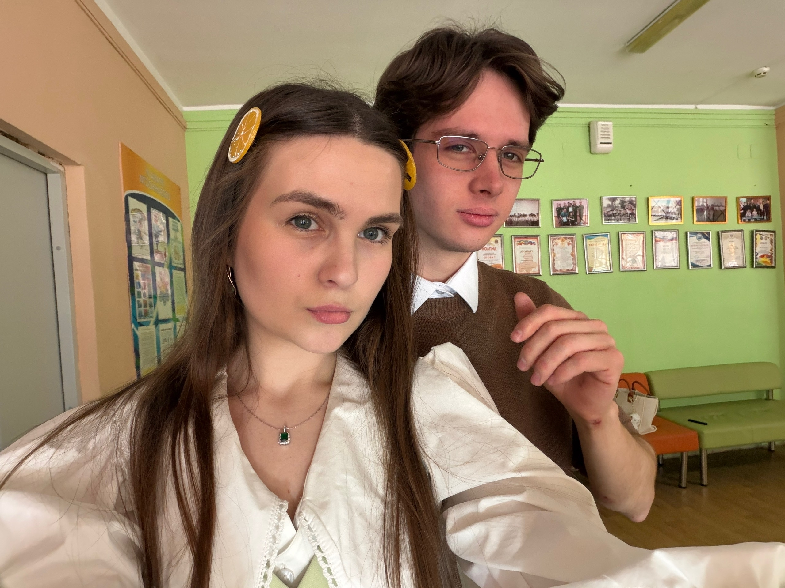
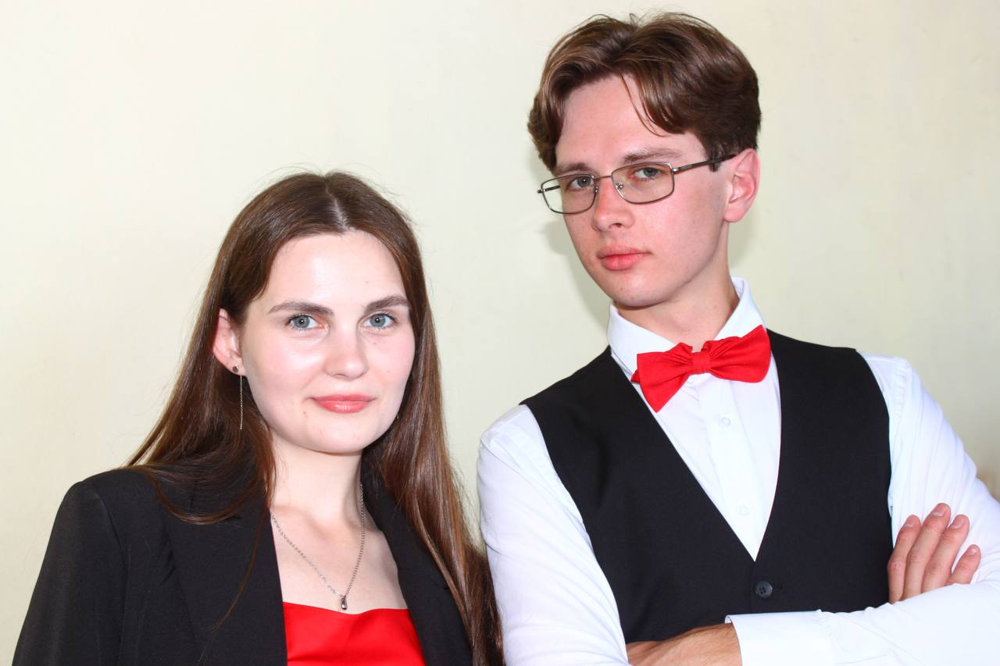

Я мог бы долго перечислять памятные моменты, но я ценю тебя не только за них. Как и ценю тебя не только за твою доброту и ум. Самое главное, почему я ценю тебя - это за те изменения, которые ты привнесла в меня.

Самое главное, что ты сделала - ты показала мне, что можно не быть идеальным. После нашего общения я не стал супер-раскрепощённым. Наверное, я стал всего на 1% ближе к тому, чтобы быть самим собой. Но этот процент - самый ценный, потому что до общения с тобой я давным давно забыл о том, что можно быть неидеальным и делала это ты простым присутствием рядом и непринуждёнными беседами.
Прозвучит, наверное, скучно, но ты научила меня задавать самому себе вопрос "А чего хочу я?". И для меня это правда стало открытием, потому что я привык в первую очередь спрашивать, чего хочет другой человек. Наверное, в понимании своих желаний и желаний друга и заключается гармония дружбы.
Если бы человек, незнакомый с тобой, попросил меня описать тебя одной фразой, я бы сказал, что ты калейдоскоп и хлопушка одновременно. Рядом с тобой всегда происходит что-то прикольное, с тобой нескучно, и ты сама располагаешь к такому же общению. Ты не только весёлая сама по себе, ты создаёшь вокруг себя пространство, в котором хочется быть таким же открытым.

Это всё - самое главное из того, за что я ценю тебя. Дальше только пара слов в завершение.
Ты стала одним из главных открытий для меня,
Володя Английский